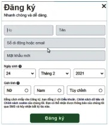
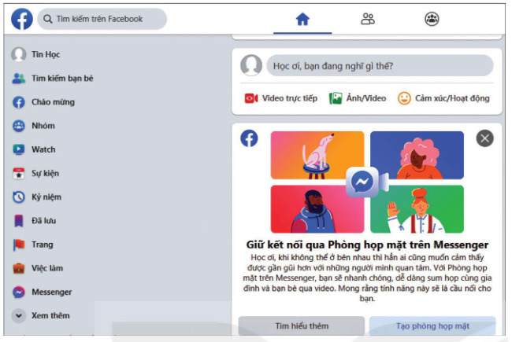
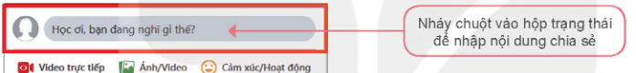
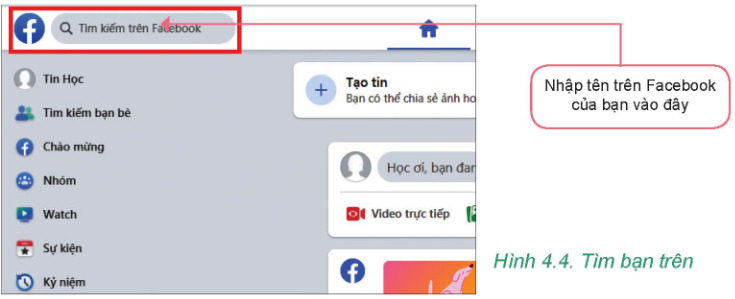
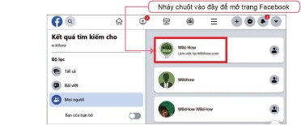
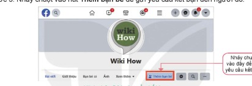

Dành cho giáo viên
Theo dõi lớp
| Học sinh / Nhóm | Đã nộp | Cập nhật |
|---|
Bước 1
1 Khởi động
Khám phá Hình ảnh khởi động
Trò chuyện Cùng An, Minh và Khoa
Đoạn trò chuyện gợi mở (không có trong SGK)
Minh: Ông tớ kể ngày xưa liên lạc với người ở xa phải gửi thư, chờ cả tháng.
An: Bây giờ thì chỉ cần nhắn tin, gọi video là thấy nhau ngay.
Khoa: Nhờ mạng xã hội đấy. Nhưng dùng thế nào cho đúng thì không phải ai cũng biết.
An: Bây giờ thì chỉ cần nhắn tin, gọi video là thấy nhau ngay.
Khoa: Nhờ mạng xã hội đấy. Nhưng dùng thế nào cho đúng thì không phải ai cũng biết.
Khởi động Các cách trao đổi thông tin
Trong suốt chiều dài lịch sử, con người đã nghĩ ra nhiều cách trao đổi thông tin với nhau: dùng chim bồ câu đưa thư, gửi thư qua bưu điện, sử dụng điện báo, điện thoại,… Thế kỉ XX đã mang đến cho chúng ta Internet, giúp tạo ra nhiều kênh trao đổi thông tin rất hữu ích, nhanh chóng,… Một trong số đó là mạng xã hội.
Ghi bài Khởi động
Sau khi thầy cô chốt, em chép nội dung dưới đây vào vở.
Bước 2 · Hình thành kiến thức mới
2.1 Mạng xã hội – kênh trao đổi thông tin phổ biến trên Internet
Hoạt động 1 Cách thức trao đổi thông tin trên Internet
1. Ở lớp 6 em đã biết sử dụng Internet để nhận và gửi thông tin. Đó là cách nào?
2. Em có biết cách trao đổi thông tin nào trên Internet đang được sử dụng nhiều nhất không? Tại sao?
2. Em có biết cách trao đổi thông tin nào trên Internet đang được sử dụng nhiều nhất không? Tại sao?
Đọc hiểu a) Các kênh trao đổi thông tin trên Internet
Đọc mục a (SGK trang 18). Từ khi Internet ra đời, việc trao đổi thông tin trên Internet ngày càng trở nên phổ biến và đóng vai trò quan trọng trong đời sống của chúng ta. Một số kênh trao đổi thông tin phổ biến trên Internet hiện nay là: thư điện tử, diễn đàn (Forum), mạng xã hội,… Thông tin trên Internet được liên tục cập nhật, chúng tồn tại với nhiều dạng khác nhau như dạng văn bản, hình ảnh, âm thanh, video, phần mềm,…
Đọc hiểu b) Mạng xã hội
Đọc mục b (SGK trang 19). Mạng xã hội là một cộng đồng trực tuyến để mọi người có thể tương tác với nhau. Cách tổ chức mạng xã hội phổ biến nhất để người sử dụng tham gia là dưới dạng các website. Tuỳ theo mục đích, các trang mạng xã hội có thể cung cấp những cách thức giao tiếp khác nhau như: tin nhắn riêng tư, đưa ra nhận xét trên trang của bạn bè, đăng ảnh và video lên, thảo luận học tập, chơi trò chơi trực tuyến,… Ví dụ một số website mạng xã hội được phân loại theo mục đích như trong Bảng 4.1.
| Mục đích và ví dụ | Mô tả |
|---|---|
| Giao lưu với bạn bè Facebook, Zalo | Cho phép người sử dụng tạo hồ sơ cá nhân, kết nối bạn bè. Người sử dụng có thể chia sẻ suy nghĩ và ý kiến cá nhân cũng như hình ảnh, âm nhạc, video. |
| Chia sẻ video YouTube | Người sử dụng có thể xem, chia sẻ, bình luận các video hoặc tải lên video của riêng họ. |
| Chia sẻ ảnh | Cho phép người sử dụng tải lên, sắp xếp và chia sẻ các hình ảnh của mình. Mọi người có thể khám phá những bức ảnh hay các phòng trưng bày kĩ thuật số. |
| Diễn đàn học tập, thảo luận Scratch | Nơi mọi người có thể cùng nhau thảo luận, chia sẻ kiến thức về một chủ đề nào đó. Là hình thức thảo luận không trực tiếp, bài viết hoặc ý kiến của bạn có thể nhận phản hồi ngay, cũng có khi vài ngày hoặc lâu hơn. |
Mạng xã hội luôn có tính hai mặt, tốt và xấu. Vì vậy, chúng ta cần cân nhắc và tìm hiểu kĩ trước khi quyết định tham gia. Một số mạng xã hội quy định độ tuổi tối thiểu được phép tham gia là thành viên, phổ biến là từ 13 tuổi trở lên.
Nhiều bạn học sinh đã biết tận dụng mạng xã hội để kết nối bạn bè, tiếp nhận thông tin và học hỏi kiến thức, kĩ năng hay bày tỏ quan điểm cá nhân,… Tuy nhiên, cũng có những bạn sử dụng mạng xã hội và thông tin vào mục đích sai trái như đăng thông tin giả, thông tin đe doạ, bắt nạt,… gây hậu quả cho người khác hoặc cho chính bản thân mình. Ví dụ: có bạn học sinh bị nhà trường kỉ luật vì đăng tải thông tin sai trái (sao chép từ mạng xã hội mà không được kiểm chứng) gây hoang mang và nguy cơ suy nghĩ lệch lạc trong một bộ phận học sinh; có trường hợp học sinh bị đình chỉ thi và bị công an điều tra, xử lí vì hành vi chụp ảnh đề thi, chia sẻ lên mạng xã hội nhờ làm hộ trong quá trình thi.
Nhiều bạn học sinh đã biết tận dụng mạng xã hội để kết nối bạn bè, tiếp nhận thông tin và học hỏi kiến thức, kĩ năng hay bày tỏ quan điểm cá nhân,… Tuy nhiên, cũng có những bạn sử dụng mạng xã hội và thông tin vào mục đích sai trái như đăng thông tin giả, thông tin đe doạ, bắt nạt,… gây hậu quả cho người khác hoặc cho chính bản thân mình. Ví dụ: có bạn học sinh bị nhà trường kỉ luật vì đăng tải thông tin sai trái (sao chép từ mạng xã hội mà không được kiểm chứng) gây hoang mang và nguy cơ suy nghĩ lệch lạc trong một bộ phận học sinh; có trường hợp học sinh bị đình chỉ thi và bị công an điều tra, xử lí vì hành vi chụp ảnh đề thi, chia sẻ lên mạng xã hội nhờ làm hộ trong quá trình thi.
Câu hỏi SGK trang 20
Ghi bài 1. Mạng xã hội
Sau khi thầy cô chốt, em chép nội dung dưới đây vào vở.
Bước 2 · Thực hành
2.2 Thực hành: Sử dụng mạng xã hội
Nhiệm vụ Tạo tài khoản, chia sẻ thông tin, kết nối bạn bè
Nhiệm vụ. a) Tạo tài khoản trên một trang mạng xã hội phù hợp với lứa tuổi của em. b) Sử dụng một số chức năng như: xem, chia sẻ thông tin dạng văn bản, hình ảnh,… trên mạng xã hội đó. c) Kết nối với ít nhất một bạn cùng lớp.
Hướng dẫn (SGK minh hoạ bằng Facebook và trình duyệt Google Chrome). Lưu ý: Facebook yêu cầu mọi người phải đủ 13 tuổi mới được phép tạo tài khoản (ở một số nơi giới hạn độ tuổi này có thể cao hơn).
Hướng dẫn (SGK minh hoạ bằng Facebook và trình duyệt Google Chrome). Lưu ý: Facebook yêu cầu mọi người phải đủ 13 tuổi mới được phép tạo tài khoản (ở một số nơi giới hạn độ tuổi này có thể cao hơn).
- a) Tạo tài khoản: Bước 1. Truy cập trang www.facebook.com. Bước 2. Chọn ngôn ngữ Tiếng Việt ở phía dưới màn hình. Bước 3. Nháy chuột vào ô Tạo tài khoản mới. Bước 4. Nhập đầy đủ thông tin vào các ô theo hướng dẫn. Bước 5. Nháy chuột vào nút Đăng ký (Hình 4.1).
- b) Sử dụng một số chức năng: Bước 1. Truy cập trang. Bước 2. Đăng nhập vào tài khoản, trang của em mở ra như Hình 4.2. Bước 3. Cập nhật ảnh đại diện và các thông tin cá nhân nếu muốn. Bước 4. Nháy chuột vào hộp trạng thái để nhập nội dung chia sẻ (Hình 4.3); có thể thêm ảnh, video bằng cách nháy chuột vào Ảnh/Video. Nháy chuột vào nút Đăng/Post để hoàn thành.
- c) Kết nối với một bạn cùng lớp: Bước 1. Nhập tên của bạn vào ô tìm kiếm (Hình 4.4). Bước 2. Khi tìm thấy trang của bạn, nháy chuột vào ảnh đại diện để mở (Hình 4.5). Bước 3. Nháy chuột vào nút Thêm bạn bè để gửi yêu cầu kết bạn (Hình 4.6). Nếu yêu cầu được chấp nhận, em và bạn sẽ trở thành “bạn bè”. Hai tài khoản sẽ tự động theo dõi nhau, có thể thấy hoạt động và tương tác với nhau.






Bảng mô phỏng mạng xã hội “Lớp Mình”
Đây là mô phỏng chạy ngay trên máy, không gửi dữ liệu đi đâu. Không nhập thông tin thật (số điện thoại, mật khẩu) của em.
a) Đăng ký
b) Trang của
c) Kết nối với bạn cùng lớp
- Tạo tài khoản (đủ 13 tuổi)
- Chia sẻ một nội dung lên trang của em
- Kết bạn với ít nhất một bạn cùng lớp
Ghi bài 2. Thực hành
Sau khi thầy cô chốt, em chép nội dung dưới đây vào vở.
Bước 3
3 Luyện tập
Luyện tập Câu hỏi SGK trang 22
Ghi bài Luyện tập
Sau khi thầy cô chốt, em chép nội dung dưới đây vào vở.
Bước 4
4 Vận dụng
Vận dụng Giới thiệu mạng xã hội, phòng tránh hậu quả
Ghi bài Vận dụng
Sau khi thầy cô chốt, em chép nội dung dưới đây vào vở.